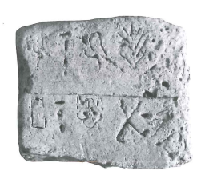
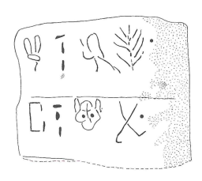

-
PEZg6
Names
Aliases for the inscription.
PEZg6, PE6, PE<6>, PE Zg 6
Support
Type of Object.
Stone object
Location
Site where object was found.
Petras
Findspot
Location at Site.
Unavailable


Scribe
Writer of Inscription.
Unavailable
Context
Approximate Date of Inscription.
Unavailable
Dimensions
Height x Length x Thickness.
Catalogue
Museum Reference Number.
Readings
1 1 0 I none
1 1 0 NA none
1 1 1 *900 none
1 1 2 TE none
1 2 3 10 none
1 2 4 TA none
1 2 4 NA none
1 2 4 MA none
1 2 4 JE none
1 2 5 10 none
Linear A Transcription
A Linear A transcription with words parsed separately.
Line breaks match the inscription.
𐘚𐘅𐄁𐘃𐄐𐘳𐘅𐙁𐘧𐄐
ASCII Transcription
An ASCII transcription with words parsed separately.
Line breaks match the inscription.
INA*900TE10TANAMAJE10
Linear A Tabulation
A Linear A transcription with words parsed separately.
Line breaks are logical, e.g. to represent a list.
𐘚𐘅𐄁𐘃
𐄐𐘳𐘅𐙁𐘧𐄐
ASCII Tabulation
An ASCII transcription with words parsed separately.
Line breaks are logical, e.g. to represent a list.
INA*900TE
10TANAMAJE10
PE Zg 6
(Siteia Mus.; Hallager 2008: 359), "unique" clay
rod found in House II "in an MM III pit with possible remains from cult
activities."
I-NA-[•]-TE
____________
TA-NA-MA-JE
_____________
PETSOPHAS
Commentary © John Younger
References